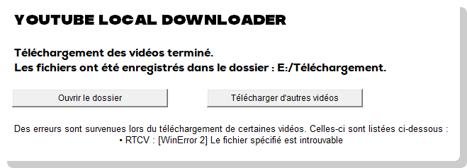
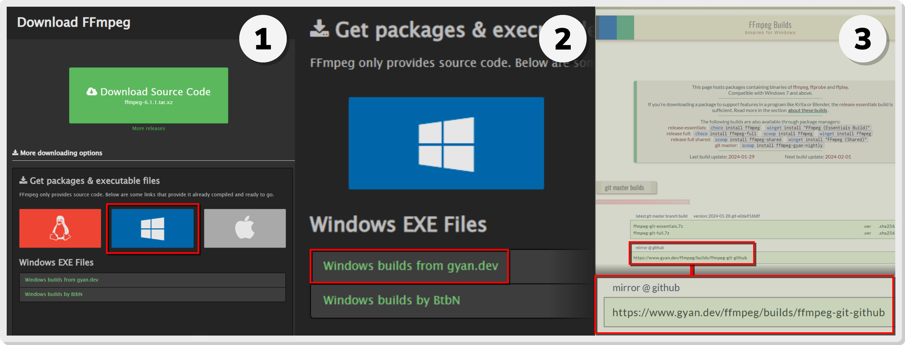
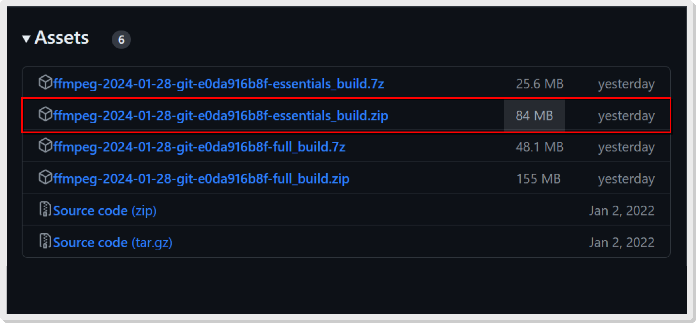
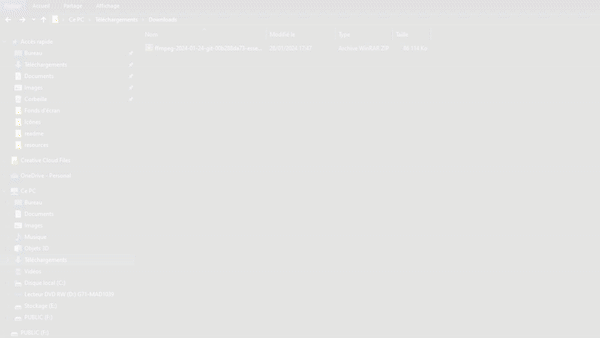
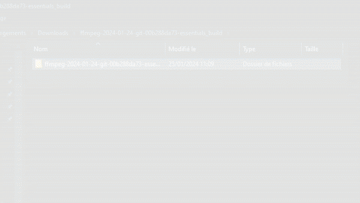
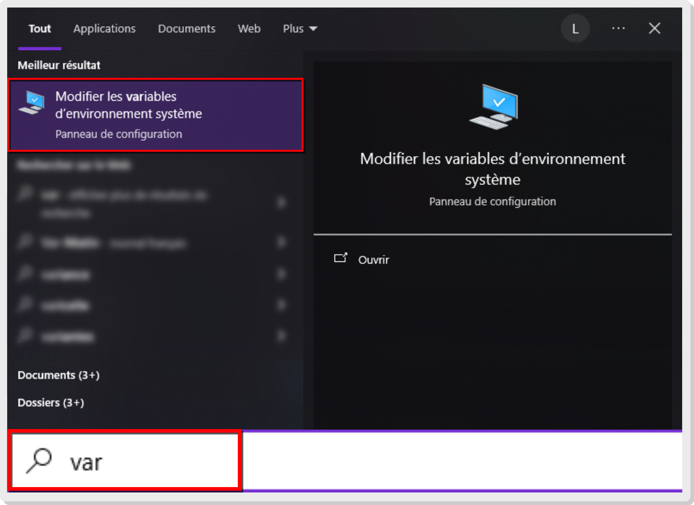
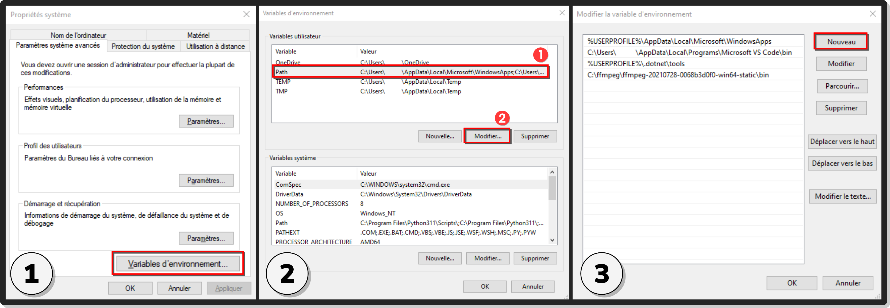
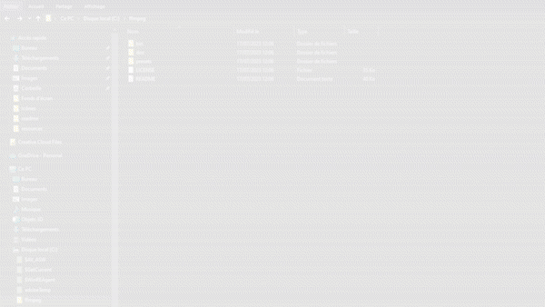
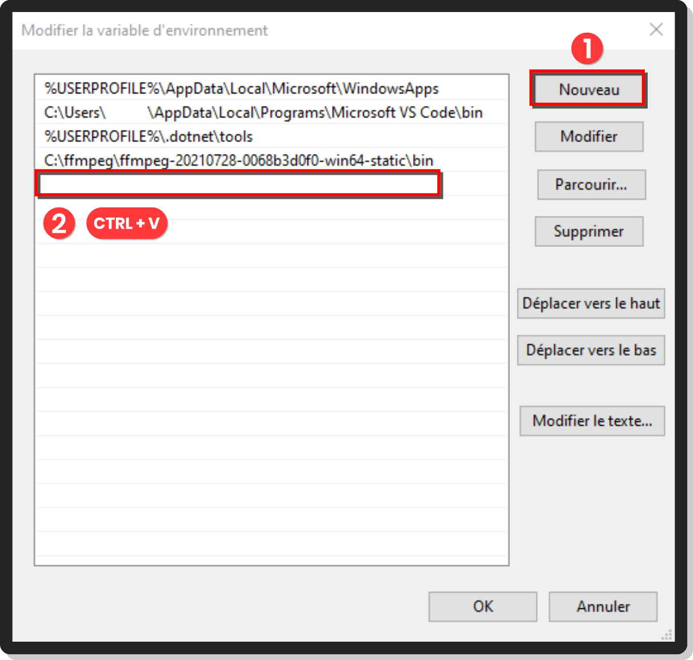
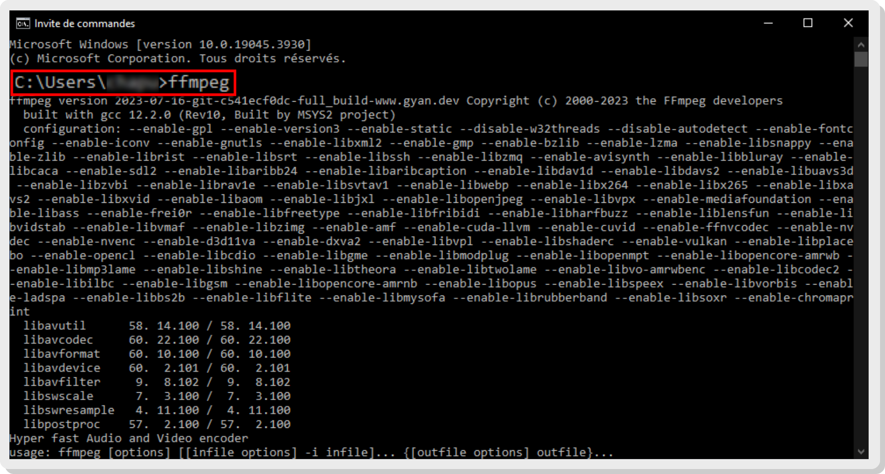

Pourquoi dois-je installer le module FFMPEG pour utiliser YouTube Local Downloader ?
"FFMPEG" est un module externe à YouTube Local Downloader. Il permet entre autres de traiter des données audio à partir de fichiers locaux, et est utilisé dans certains logiciels pour permettre le traitement ou bien la lecture de fichiers audio.YouTube Local Downloader exploite ce module pour permettre la fonction de conversion des vidéos au format MP3.Si vous essayez de télécharger une vidéo au format audio alors que votre appareil ne dispose pas du module, vous obtiendrez probablement une erreur comme celle-ci :[WinError 2] Le fichier spécifié est introuvable

Le cas échéant, vous allez devoir installer le module. Pas de panique, suivez simplement ce guide et tout se passera bien.N.B. : L'installation du module nécessite les droits d'administrateur.
Vidéo complète du guide d'installation
Vous n'avez pas de temps à perdre ? Voici la vidéo de tutoriel complète pour installer FFMPEG !Si la vidéo va trop vite et que vous souhaitez vous assurer de ne pas faire d'erreurs, continuez avec un guide plus détaillé sur l'installation de FFMPEG, étape par étape.
Étape 1 : Télécharger FFMPEG
La première étape consiste à télécharger le dossier contenant le module à partir du site officiel de FFMPEG (puis de Git-Hub).Pour vous simplifier la tâche, cliquez ici pour directement vous rendre sur la page Git-Hub de FFMPEG.Notez que la version que vous installerez en cliquant sur le lien ci-dessus est celle du 28 janvier 2024. Si vous souhaitez installer une version plus récente de FFMPEG, suivez les étapes suivantes :
• Rendez-vous sur le site officiel de FFMPEG.
• Ensuite, placez la souris sur l'icône de Windows au niveau de la section de téléchargements "Get packages & executable files", puis cliquez sur le lien "Windows builds from gyan.dev".
• Une fois sur le site gyan.dev, baissez la page jusqu'à voir les liens de téléchargement (section "git master builds"). Cliquez sur le lien associé à "mirror @ github".

Une fois sur la page Git-Hub, téléchargez le package au format .zip et dont le titre contient "essentials_build". À titre d'indication, celui-ci devrait avoir une taille d'approximativement 80 Mo.Une fois téléchargé, rendez-vous dans le dossier contenant le package.

Étape 2 : Décompresser le dossier
Pour réaliser cette étape, vous devez posséder WinRAR sur votre ordinateur. Si ce n'est pas le cas, vous pouvez effectuer une installation classique en vous rendant sur le site officiel de WinRAR, puis en cliquant sur "Télécharger WinRAR".Si vous voulez aller plus vite, installez WinRAR directement en cliquant ici.
Après avoir téléchargé le package, rendez-vous dans le dossier dans lequel vous l'avez enregistré. Ouvrez-le avec WinRAR (cela devrait se faire par défaut, sinon vous pouvez faire : Clic droit → "Ouvrir avec WinRAR").• La page de WinRAR s'ouvrira. Sélectionnez le dossier "ffmpeg-..." et cliquez sur "Extraire vers" dans les options du haut.• La page d'options pour l'extraction devrait s'ouvrir. Vous pouvez éventuellement modifier le chemin d'accès de destination, mais il est conseillé de le laisser comme par défaut. Cliquez ensuite sur "OK" en bas de la page.

Étape 3 : Déplacer le dossier vers le disque local
Vous pouvez désormais fermer la page de WinRAR.Rendez-vous dans le dossier vers lequel vous avez extrait les fichiers. Vous devriez trouver un dossier dont le nom ressemble à "ffmpeg-XXXX-XX-XX-git-...-essentials_build". Faites : Clic droit → "Renommer" et renommez le dossier en tant que "ffmpeg".• Une fois cela fait, sélectionnez le dossier et glissez-le vers votre Disque local (C:).Enfin, accédez au dossier "ffmpeg" déplacé dans le disque local et laissez l'explorateur de fichiers ouvert.

Étape 4 : Ajouter le module FFMPEG aux variables d'environnement du système
Appuyez sur la touche Windows pour ouvrir le menu de démarrage, puis saisissez dans la barre de recherche "variables d'environnement" (saisir "var" devrait également fonctionner).Cliquez sur le résultat "Modifier les variables d'environnement système".

La page montrée dans la première vignette de l'image ci-dessous devrait s'afficher. Cliquez sur le bouton "Variables d'environnement...".• Dans la page qui s'ouvre, la liste des variables utilisateurs s'affiche. Sélectionnez la variable "Path" puis cliquez sur modifier (veillez à bien cliquer sur le bouton situé en dessous des variables utilisateur et non des variables système).• Enfin, une page répertoriant la liste des variables s'ouvre. Laissez-la ouverte et retournez dans l'explorateur de fichiers, au niveau du dossier "ffmpeg" où vous vous êtes rendu précédemment.

Une fois dans le dossier "ffmpeg", ouvrez le dossier "bin".• Ensuite, cliquez sur le chemin d'accès au dessus de la fenêtre pour le sélectionner, puis copiez-le (Ctrl + C ou Clic droit → "Copier").

Vous y êtes presque ! Retournez dans la fenêtre répertoriant les variables d'environnement (la troisième page que vous avez ouverte) et cliquez sur "Nouveau".• Enfin, dans l'entrée de saisie de texte, collez le chemin d'accès au dossier précédemment copié (Ctrl + V ou Clic droit → "Coller").

Une fois que vous avez copié le chemin d'accès dans l'entrée de saisie de texte, confirmez les changements en cliquant sur "OK", puis dans la fenêtre antérieure sur "OK" et enfin, dans la première fenêtre des variables d'environnement, sur "OK" également.
L'installation est terminée !
FFMPEG est désormais installé sur votre ordinateur.Vous pouvez maintenant profiter gratuitement et sans publicité ni interruption de la fonction de convertion au format MP3 de vos vidéos avec YouTube Local Downloader !
Si vous rencontrez toujours des erreurs lors de la convertion au format audio de vos vidéos, il y a probablement eu un problème lors de l'installation de FFMPEG. Pour vous assurer que FFMPEG est bien installé, suivez ces étapes :• Accédez au menu Démarrer de Windows et saisissez dans la barre de recherche "Invite de commandes", puis ouvrez l'application.• Dans la fenêtre qui s'ouvre, saisissez "ffmpeg" puis appuyez sur la touche Entrée.
Si l'invite de commande affiche des informations sur FFMPEG (comme sur l'image ci-dessous), cela signifie que FFMPEG est correctement installé sur votre ordinateur.Dans le cas contraire, il y a eu un problème lors de l'installation. Si vous faites face à ce cas de figure, vous êtes invité à resuivre ce guide.

Ajoutez-moi sur Discord !
Si vous avez besoin d'assistance, souhaitez me faire part d'une proposition ou simplement me passer le bonjour, vous pouvez m'ajouter sur Discord avec mon nom d'utilisateur : @screan_
Si vous avez besoin d'assistance, souhaitez me faire part d'une proposition ou simplement me passer le bonjour, vous pouvez m'ajouter sur Discord avec mon nom d'utilisateur : @screan_